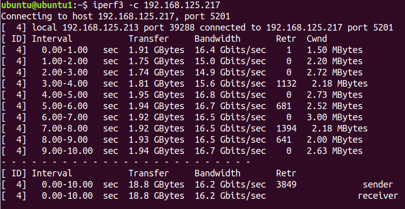
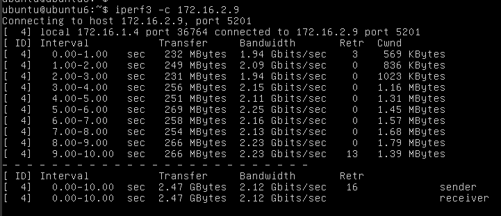
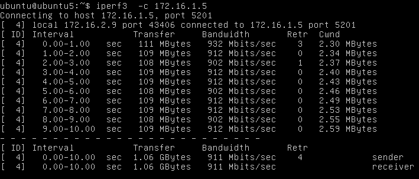
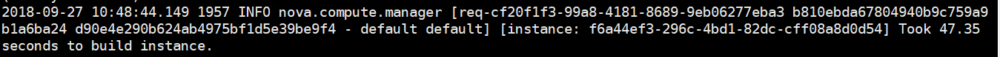

| 节点名称 | 主机名称 | manage IP | provider IP |
|---|---|---|---|
| 控制节点 | controller | 192.168.125.123 | 10.19.19.23 |
| 计算节点1 | compute1 | 192.168.125.125 | 10.19.19.25 |
| 计算节点2 | compute2 | 192.168.125.113 | 10.19.19.13 |
| 计算节点3 | compute3 | 192.168.125.119 | 10.19.19.119 |
openstack默认配置为可以创建10 个实例，可以修改nova.conf配置，设置虚拟机数量限制。
创建测试实例如下：
| 名称 | 所在节点 | virsh 名称 | 网络地址 | 网络类型 | 浮动IP |
|---|---|---|---|---|---|
| ubuntu2 | compute1 | instance-00000027 | 192.168.125.221 | provider | none |
| ubuntu3 | compute3 | instance-0000002c | 192.168.125.217 | provider | none |
| ubuntu1 | compute3 | instance-0000002d | 192.168.125.213 | provider | none |
| ubuntu4 | compute3 | instance-0000002e | 172.16.1.5 | self | none |
| ubuntu5 | compute1 | instance-0000002f | 172.16.2.9 | self | none |
| ubuntu6 | compute1 | instance-00000030 | 172.16.1.4 | self | 192.168.125.211 |
| ubuntu7 | compute1 | instance-00000031 | 172.16.1.8 | self | 192.168.125.224 |
实例配置 * 系统：ubuntu16.04 * 内存：4G * vcpu:4
测试ubuntu1与ubuntu3之间的带宽，以ubuntu3作为iperf3服务器

测试ubuntu4与ubuntu3之间带宽，以ubuntu3作为iperf3服务器
ubuntu5与ubuntu6之间，以ubuntu5作为iperf3服务器

测试Ubuntu4和Ubuntu5之间的带宽，以ubuntu4作为iperf3服务器

测试Ubuntu6的浮动IP与本地192.168.122.146之间的带宽 iperf3服务器无法连接，可以ping通
测试Ubuntu6与Ubuntu7 虚拟机之间的网络通信带宽。 iperf3服务器无法连接，可以ping通
查看nova日志，创建实例时间为47秒
